Illustrious 対応 おすすめLoRA一覧
対応モデルごとに分類されたLoRA一覧です。各カテゴリーを選択してください。全 985 ファイル。
loras (1)
Flux (168)
Illustrious (196)
Pony (104)
SD1.5 (264)
SDXL (23)
Unknown (124)
WanVideo (106)
Illustrious (100 items on this page / Total 196 items)
Illustrious
全般
13sentinels-v6-illustrious-000033
「13sentinels-v6-illustrious-000033」に特化した追加学習モデルです。Stable DiffusionでのAI画像生成にLoRAを導入し、特定要素の再現性を劇的に向上。効率的かつ高品質なビジュアルを求める全てのAI絵師必見のモデルです。
Size: 44,592,920 bytes
Illustrious
全般
2000s_Moe_Anime__Style__Illustrious_SDXL-000069
「2000s_Moe_Anime__Style__Illustrious_SDXL-000069」に特化した追加学習モデルです。Stable DiffusionでのAI画像生成にLoRAを導入し、特定要素の再現性を劇的に向上。効率的かつ高品質なビジュアルを求める全てのAI絵師必見のモデルです。
Size: 228,533,876 bytes
Illustrious
全般
Ai_Hoshino_Oshi_No_Ko_IL_V1
「Ai_Hoshino_Oshi_No_Ko_IL_V1」に特化した追加学習モデルです。Stable DiffusionでのAI画像生成にLoRAを導入し、特定要素の再現性を劇的に向上。効率的かつ高品質なビジュアルを求める全てのAI絵師必見のモデルです。
Size: 57,433,612 bytes
Illustrious
全般
AkenoDxD_IXL
「AkenoDxD_IXL」に特化した追加学習モデルです。Stable DiffusionでのAI画像生成にLoRAを導入し、特定要素の再現性を劇的に向上。効率的かつ高品質なビジュアルを求める全てのAI絵師必見のモデルです。
Size: 228,507,156 bytes
![Amashiro Natsuki [style]Remake-Illus](thumbnails/Amashiro Natsuki [style]Remake-Illus.preview.jpg)
Illustrious
全般
Amashiro Natsuki [style]Remake-Illus
「Amashiro Natsuki [style]Remake-Illus」に特化した追加学習モデルです。Stable DiffusionでのAI画像生成にLoRAを導入し、特定要素の再現性を劇的に向上。効率的かつ高品質なビジュアルを求める全てのAI絵師必見のモデルです。
Size: 28,957,660 bytes

Illustrious
全般
Aqua - Illu
「Aqua - Illu」に特化した追加学習モデルです。Stable DiffusionでのAI画像生成にLoRAを導入し、特定要素の再現性を劇的に向上。効率的かつ高品質なビジュアルを求める全てのAI絵師必見のモデルです。
Size: 228,453,772 bytes
Illustrious
全般
armpitwrinkles_il_v1
「armpitwrinkles_il_v1」に特化した追加学習モデルです。Stable DiffusionでのAI画像生成にLoRAを導入し、特定要素の再現性を劇的に向上。効率的かつ高品質なビジュアルを求める全てのAI絵師必見のモデルです。
Size: 228,457,420 bytes
Illustrious
全般
ars_almal_ilxl_v1
「ars_almal_ilxl_v1」に特化した追加学習モデルです。Stable DiffusionでのAI画像生成にLoRAを導入し、特定要素の再現性を劇的に向上。効率的かつ高品質なビジュアルを求める全てのAI絵師必見のモデルです。
Size: 114,432,124 bytes

Illustrious
全般
asteliarXLNoobai_v10
「asteliarXLNoobai_v10」に特化した追加学習モデルです。Stable DiffusionでのAI画像生成にLoRAを導入し、特定要素の再現性を劇的に向上。効率的かつ高品質なビジュアルを求める全てのAI絵師必見のモデルです。
Size: 228,498,084 bytes
Illustrious
全般
ayatoutae-illu-nvwls-v1
「ayatoutae-illu-nvwls-v1」に特化した追加学習モデルです。Stable DiffusionでのAI画像生成にLoRAを導入し、特定要素の再現性を劇的に向上。効率的かつ高品質なビジュアルを求める全てのAI絵師必見のモデルです。
Size: 57,441,020 bytes

Illustrious
全般
Banbaro Armor illusXL v1
「Banbaro Armor illusXL v1」に特化した追加学習モデルです。Stable DiffusionでのAI画像生成にLoRAを導入し、特定要素の再現性を劇的に向上。効率的かつ高品質なビジュアルを求める全てのAI絵師必見のモデルです。
Size: 57,425,092 bytes

Illustrious
全般
barbeloth-illu-nvwls-v1
「barbeloth-illu-nvwls-v1」に特化した追加学習モデルです。Stable DiffusionでのAI画像生成にLoRAを導入し、特定要素の再現性を劇的に向上。効率的かつ高品質なビジュアルを求める全てのAI絵師必見のモデルです。
Size: 57,430,548 bytes

Illustrious
全般
bell-tsukiyono-alpha-illustriousxl-lora-nochekaiser
「bell-tsukiyono-alpha-illustriousxl-lora-nochekaiser」に特化した追加学習モデルです。Stable DiffusionでのAI画像生成にLoRAを導入し、特定要素の再現性を劇的に向上。効率的かつ高品質なビジュアルを求める全てのAI絵師必見のモデルです。
Size: 228,457,796 bytes
Illustrious
全般
Better_Smoothie_(unfazed)_IL_v2.0
「Better_Smoothie_(unfazed)_IL_v2.0」に特化した追加学習モデルです。Stable DiffusionでのAI画像生成にLoRAを導入し、特定要素の再現性を劇的に向上。効率的かつ高品質なビジュアルを求める全てのAI絵師必見のモデルです。
Size: 254,994,287 bytes

Illustrious
全般
China Leotard Illustrious1V1.2
「China Leotard Illustrious1V1.2」に特化した追加学習モデルです。Stable DiffusionでのAI画像生成にLoRAを導入し、特定要素の再現性を劇的に向上。効率的かつ高品質なビジュアルを求める全てのAI絵師必見のモデルです。
Size: 228,467,676 bytes

Illustrious
全般
Chitose4_V1_wai-illu-000024
「Chitose4_V1_wai-illu-000024」に特化した追加学習モデルです。Stable DiffusionでのAI画像生成にLoRAを導入し、特定要素の再現性を劇的に向上。効率的かつ高品質なビジュアルを求める全てのAI絵師必見のモデルです。
Size: 202,701,844 bytes

Illustrious
全般
claire-thomas-s1-v2-illustriousxl-lora-nochekaiser
「claire-thomas-s1-v2-illustriousxl-lora-nochekaiser」に特化した追加学習モデルです。Stable DiffusionでのAI画像生成にLoRAを導入し、特定要素の再現性を劇的に向上。効率的かつ高品質なビジュアルを求める全てのAI絵師必見のモデルです。
Size: 228,466,844 bytes
Illustrious
全般
ephnel-illu-nvwls-v1
「ephnel-illu-nvwls-v1」に特化した追加学習モデルです。Stable DiffusionでのAI画像生成にLoRAを導入し、特定要素の再現性を劇的に向上。効率的かつ高品質なビジュアルを求める全てのAI絵師必見のモデルです。
Size: 57,438,324 bytes
Illustrious
全般
eri-illu-nvwls-v1
「eri-illu-nvwls-v1」に特化した追加学習モデルです。Stable DiffusionでのAI画像生成にLoRAを導入し、特定要素の再現性を劇的に向上。効率的かつ高品質なビジュアルを求める全てのAI絵師必見のモデルです。
Size: 57,447,108 bytes
Illustrious
全般
es_xblaze_illust_scarxzys
「es_xblaze_illust_scarxzys」に特化した追加学習モデルです。Stable DiffusionでのAI画像生成にLoRAを導入し、特定要素の再現性を劇的に向上。効率的かつ高品質なビジュアルを求める全てのAI絵師必見のモデルです。
Size: 57,425,820 bytes

Illustrious
全般
Eva Aensland - Illu
「Eva Aensland - Illu」に特化した追加学習モデルです。Stable DiffusionでのAI画像生成にLoRAを導入し、特定要素の再現性を劇的に向上。効率的かつ高品質なビジュアルを求める全てのAI絵師必見のモデルです。
Size: 228,453,524 bytes
Illustrious
全般
fatedemeter-illu-nvwls-v1
「fatedemeter-illu-nvwls-v1」に特化した追加学習モデルです。Stable DiffusionでのAI画像生成にLoRAを導入し、特定要素の再現性を劇的に向上。効率的かつ高品質なビジュアルを求める全てのAI絵師必見のモデルです。
Size: 57,434,364 bytes

Illustrious
全般
fillia-von-einzbern-alpha-illustriousxl-lora-nochekaiser
「fillia-von-einzbern-alpha-illustriousxl-lora-nochekaiser」に特化した追加学習モデルです。Stable DiffusionでのAI画像生成にLoRAを導入し、特定要素の再現性を劇的に向上。効率的かつ高品質なビジュアルを求める全てのAI絵師必見のモデルです。
Size: 228,463,812 bytes
Illustrious
全般
ftvirgo-illu-nvwls-v1
「ftvirgo-illu-nvwls-v1」に特化した追加学習モデルです。Stable DiffusionでのAI画像生成にLoRAを導入し、特定要素の再現性を劇的に向上。効率的かつ高品質なビジュアルを求める全てのAI絵師必見のモデルです。
Size: 57,428,996 bytes
Illustrious
全般
fujikura-sylvie-illustrious-000010
「fujikura-sylvie-illustrious-000010」に特化した追加学習モデルです。Stable DiffusionでのAI画像生成にLoRAを導入し、特定要素の再現性を劇的に向上。効率的かつ高品質なビジュアルを求める全てのAI絵師必見のモデルです。
Size: 44,562,032 bytes
Illustrious
全般
Gundam_Build_Metaverse_Avatar_Fumina_ill_v12
「Gundam_Build_Metaverse_Avatar_Fumina_ill_v12」に特化した追加学習モデルです。Stable DiffusionでのAI画像生成にLoRAを導入し、特定要素の再現性を劇的に向上。効率的かつ高品質なビジュアルを求める全てのAI絵師必見のモデルです。
Size: 57,459,372 bytes
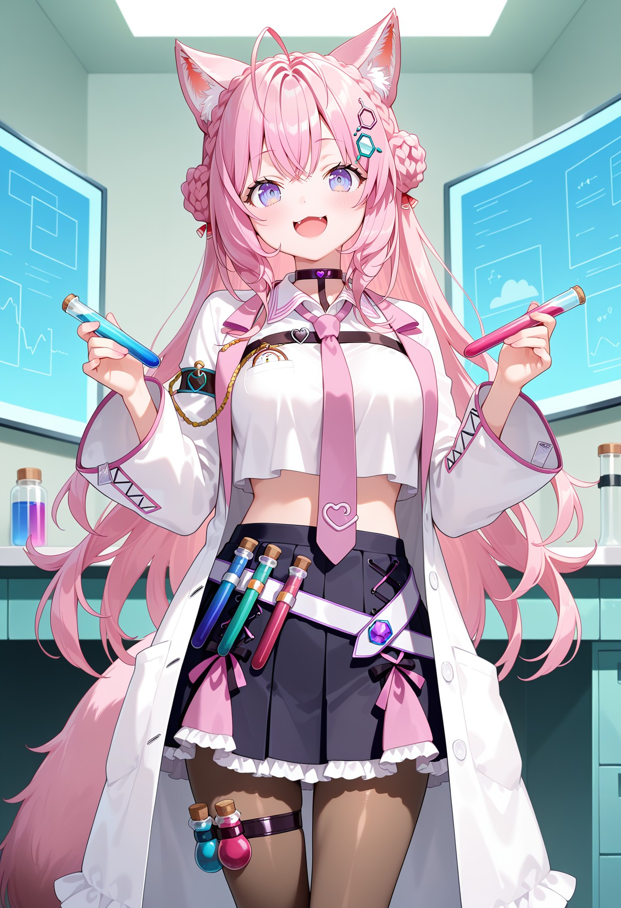
Illustrious
全般
hakui_koyori_ilxl_v1
「hakui_koyori_ilxl_v1」に特化した追加学習モデルです。Stable DiffusionでのAI画像生成にLoRAを導入し、特定要素の再現性を劇的に向上。効率的かつ高品質なビジュアルを求める全てのAI絵師必見のモデルです。
Size: 114,432,124 bytes
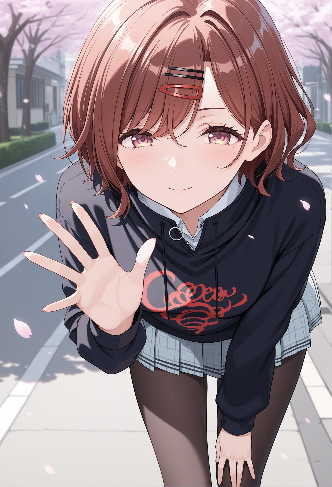
Illustrious
全般
higuchi_madoka_illust_scarxzys
「higuchi_madoka_illust_scarxzys」に特化した追加学習モデルです。Stable DiffusionでのAI画像生成にLoRAを導入し、特定要素の再現性を劇的に向上。効率的かつ高品質なビジュアルを求める全てのAI絵師必見のモデルです。
Size: 57,424,124 bytes

Illustrious
全般
honma_himawari_ilxl_v1
「honma_himawari_ilxl_v1」に特化した追加学習モデルです。Stable DiffusionでのAI画像生成にLoRAを導入し、特定要素の再現性を劇的に向上。効率的かつ高品質なビジュアルを求める全てのAI絵師必見のモデルです。
Size: 114,432,124 bytes

Illustrious
全般
houki-shinonono-s2-illustriousxl-lora-nochekaiser
「houki-shinonono-s2-illustriousxl-lora-nochekaiser」に特化した追加学習モデルです。Stable DiffusionでのAI画像生成にLoRAを導入し、特定要素の再現性を劇的に向上。効率的かつ高品質なビジュアルを求める全てのAI絵師必見のモデルです。
Size: 228,475,964 bytes
Illustrious
全般
illustrious_XL_kasumi_h13a
「illustrious_XL_kasumi_h13a」に特化した追加学習モデルです。Stable DiffusionでのAI画像生成にLoRAを導入し、特定要素の再現性を劇的に向上。効率的かつ高品質なビジュアルを求める全てのAI絵師必見のモデルです。
Size: 228,452,716 bytes
Illustrious
全般
illustrious_XL_miki_h13a
「illustrious_XL_miki_h13a」に特化した追加学習モデルです。Stable DiffusionでのAI画像生成にLoRAを導入し、特定要素の再現性を劇的に向上。効率的かつ高品質なビジュアルを求める全てのAI絵師必見のモデルです。
Size: 228,453,164 bytes
Illustrious
全般
illu_Ayase_Eli-67
「illu_Ayase_Eli-67」に特化した追加学習モデルです。Stable DiffusionでのAI画像生成にLoRAを導入し、特定要素の再現性を劇的に向上。効率的かつ高品質なビジュアルを求める全てのAI絵師必見のモデルです。
Size: 114,446,044 bytes
Illustrious
全般
illu_Tokoro_Megumi-89
「illu_Tokoro_Megumi-89」に特化した追加学習モデルです。Stable DiffusionでのAI画像生成にLoRAを導入し、特定要素の再現性を劇的に向上。効率的かつ高品質なビジュアルを求める全てのAI絵師必見のモデルです。
Size: 114,440,812 bytes
Illustrious
全般
invisibleman_il_v1
「invisibleman_il_v1」に特化した追加学習モデルです。Stable DiffusionでのAI画像生成にLoRAを導入し、特定要素の再現性を劇的に向上。効率的かつ高品質なビジュアルを求める全てのAI絵師必見のモデルです。
Size: 228,457,980 bytes
Illustrious
全般
kaga_sumire_ilxl_v2
「kaga_sumire_ilxl_v2」に特化した追加学習モデルです。Stable DiffusionでのAI画像生成にLoRAを導入し、特定要素の再現性を劇的に向上。効率的かつ高品質なビジュアルを求める全てのAI絵師必見のモデルです。
Size: 114,432,124 bytes

Illustrious
全般
Kairi_KHv2 - Illu
「Kairi_KHv2 - Illu」に特化した追加学習モデルです。Stable DiffusionでのAI画像生成にLoRAを導入し、特定要素の再現性を劇的に向上。効率的かつ高品質なビジュアルを求める全てのAI絵師必見のモデルです。
Size: 228,453,924 bytes
Illustrious
全般
Knbotz_ILLA
「Knbotz_ILLA」に特化した追加学習モデルです。Stable DiffusionでのAI画像生成にLoRAを導入し、特定要素の再現性を劇的に向上。効率的かつ高品質なビジュアルを求める全てのAI絵師必見のモデルです。
Size: 228,462,612 bytes

Illustrious
全般
Koshi Torako v2 illu
「Koshi Torako v2 illu」に特化した追加学習モデルです。Stable DiffusionでのAI画像生成にLoRAを導入し、特定要素の再現性を劇的に向上。効率的かつ高品質なビジュアルを求める全てのAI絵師必見のモデルです。
Size: 57,437,988 bytes
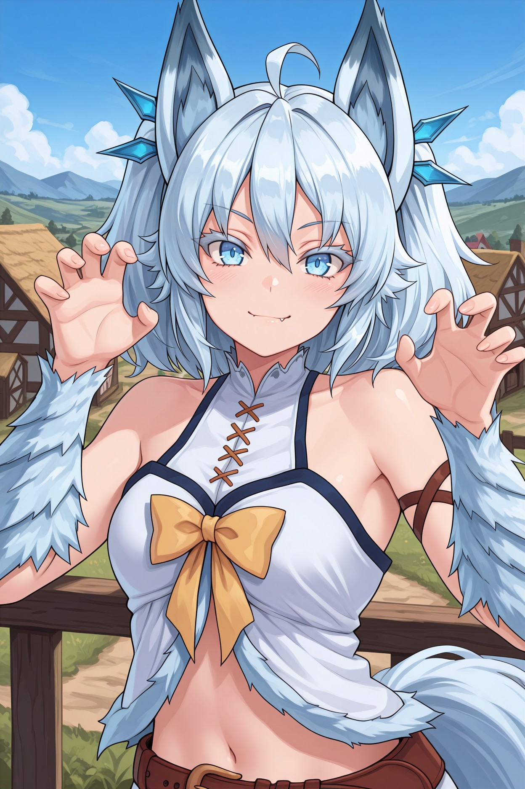
Illustrious
全般
kysetsuna-illu-nvwls-v1
「kysetsuna-illu-nvwls-v1」に特化した追加学習モデルです。Stable DiffusionでのAI画像生成にLoRAを導入し、特定要素の再現性を劇的に向上。効率的かつ高品質なビジュアルを求める全てのAI絵師必見のモデルです。
Size: 57,432,940 bytes

Illustrious
全般
laura-bodewig-s2-illustriousxl-lora-nochekaiser
「laura-bodewig-s2-illustriousxl-lora-nochekaiser」に特化した追加学習モデルです。Stable DiffusionでのAI画像生成にLoRAを導入し、特定要素の再現性を劇的に向上。効率的かつ高品質なビジュアルを求める全てのAI絵師必見のモデルです。
Size: 228,473,900 bytes

Illustrious
全般
lexia-von-alceria-s1-illustriousxl-lora-nochekaiser
「lexia-von-alceria-s1-illustriousxl-lora-nochekaiser」に特化した追加学習モデルです。Stable DiffusionでのAI画像生成にLoRAを導入し、特定要素の再現性を劇的に向上。効率的かつ高品質なビジュアルを求める全てのAI絵師必見のモデルです。
Size: 228,473,188 bytes

Illustrious
全般
lingyin-huang-s2-illustriousxl-lora-nochekaiser
「lingyin-huang-s2-illustriousxl-lora-nochekaiser」に特化した追加学習モデルです。Stable DiffusionでのAI画像生成にLoRAを導入し、特定要素の再現性を劇的に向上。効率的かつ高品質なビジュアルを求める全てのAI絵師必見のモデルです。
Size: 228,472,748 bytes
Illustrious
全般
luna_noa_Illustrious_V2
「luna_noa_Illustrious_V2」に特化した追加学習モデルです。Stable DiffusionでのAI画像生成にLoRAを導入し、特定要素の再現性を劇的に向上。効率的かつ高品質なビジュアルを求める全てのAI絵師必見のモデルです。
Size: 228,462,412 bytes

Illustrious
全般
luviagelita-edelfelt-casefiles-s1-illustriousxl-lora-nochekaiser
「luviagelita-edelfelt-casefiles-s1-illustriousxl-lora-nochekaiser」に特化した追加学習モデルです。Stable DiffusionでのAI画像生成にLoRAを導入し、特定要素の再現性を劇的に向上。効率的かつ高品質なビジュアルを求める全てのAI絵師必見のモデルです。
Size: 228,467,740 bytes

Illustrious
全般
mai-fukuyama-s2-illustriousxl-lora-nochekaiser
「mai-fukuyama-s2-illustriousxl-lora-nochekaiser」に特化した追加学習モデルです。Stable DiffusionでのAI画像生成にLoRAを導入し、特定要素の再現性を劇的に向上。効率的かつ高品質なビジュアルを求める全てのAI絵師必見のモデルです。
Size: 228,458,876 bytes

Illustrious
全般
maia-azuma-alpha-illustriousxl-lora-nochekaiser
「maia-azuma-alpha-illustriousxl-lora-nochekaiser」に特化した追加学習モデルです。Stable DiffusionでのAI画像生成にLoRAを導入し、特定要素の再現性を劇的に向上。効率的かつ高品質なビジュアルを求める全てのAI絵師必見のモデルです。
Size: 228,457,532 bytes
Illustrious
全般
Maia_illustrious
「Maia_illustrious」に特化した追加学習モデルです。Stable DiffusionでのAI画像生成にLoRAを導入し、特定要素の再現性を劇的に向上。効率的かつ高品質なビジュアルを求める全てのAI絵師必見のモデルです。
Size: 228,499,012 bytes

Illustrious
全般
makinami_mari_illustrious _scarxzys
「makinami_mari_illustrious _scarxzys」に特化した追加学習モデルです。Stable DiffusionでのAI画像生成にLoRAを導入し、特定要素の再現性を劇的に向上。効率的かつ高品質なビジュアルを求める全てのAI絵師必見のモデルです。
Size: 57,438,556 bytes
Illustrious
全般
mangamaster_style_v5_illustrious_epoch_7
「mangamaster_style_v5_illustrious_epoch_7」に特化した追加学習モデルです。Stable DiffusionでのAI画像生成にLoRAを導入し、特定要素の再現性を劇的に向上。効率的かつ高品質なビジュアルを求める全てのAI絵師必見のモデルです。
Size: 228,473,884 bytes

Illustrious
全般
menishuki_Illust_v2
「menishuki_Illust_v2」に特化した追加学習モデルです。Stable DiffusionでのAI画像生成にLoRAを導入し、特定要素の再現性を劇的に向上。効率的かつ高品質なビジュアルを求める全てのAI絵師必見のモデルです。
Size: 228,464,724 bytes
Illustrious
全般
Methode(snf)-Illus
「Methode(snf)-Illus」に特化した追加学習モデルです。Stable DiffusionでのAI画像生成にLoRAを導入し、特定要素の再現性を劇的に向上。効率的かつ高品質なビジュアルを求める全てのAI絵師必見のモデルです。
Size: 28,920,244 bytes
Illustrious
全般
mikazuchikagura-illu-nvwls-v1
「mikazuchikagura-illu-nvwls-v1」に特化した追加学習モデルです。Stable DiffusionでのAI画像生成にLoRAを導入し、特定要素の再現性を劇的に向上。効率的かつ高品質なビジュアルを求める全てのAI絵師必見のモデルです。
Size: 57,434,116 bytes
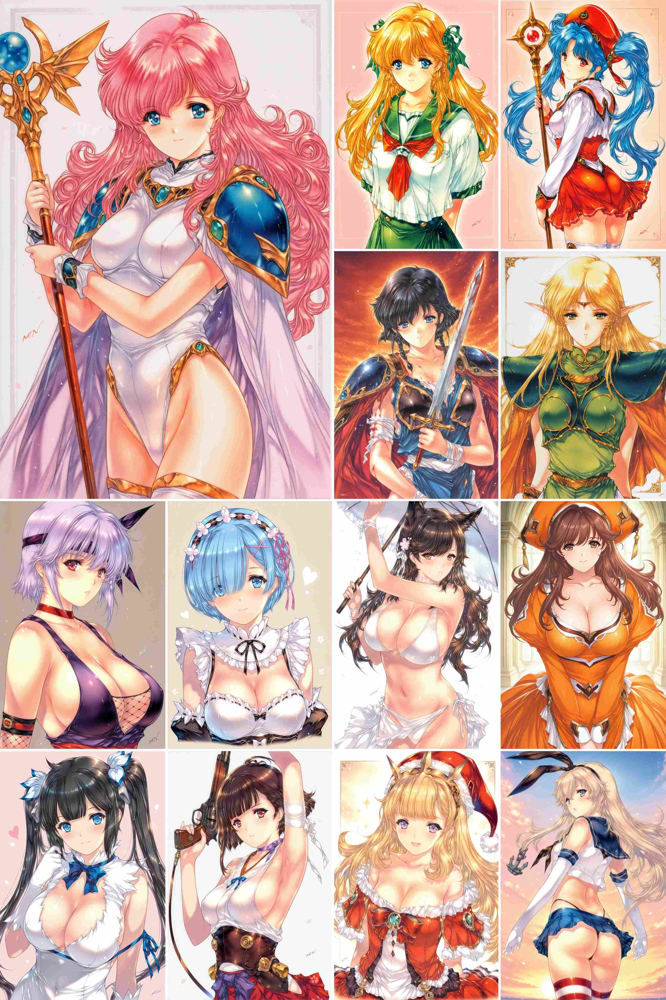
Illustrious
全般
MIN-NARAKEN_v2_illustriousXL
「MIN-NARAKEN_v2_illustriousXL」に特化した追加学習モデルです。Stable DiffusionでのAI画像生成にLoRAを導入し、特定要素の再現性を劇的に向上。効率的かつ高品質なビジュアルを求める全てのAI絵師必見のモデルです。
Size: 28,943,340 bytes
Illustrious
全般
Minami_Kotobuki_Oshi_No_Ko_IL_V1
「Minami_Kotobuki_Oshi_No_Ko_IL_V1」に特化した追加学習モデルです。Stable DiffusionでのAI画像生成にLoRAを導入し、特定要素の再現性を劇的に向上。効率的かつ高品質なビジュアルを求める全てのAI絵師必見のモデルです。
Size: 57,428,452 bytes
Illustrious
全般
Narumi-Shirabe-IllustriousXL-05
「Narumi-Shirabe-IllustriousXL-05」に特化した追加学習モデルです。Stable DiffusionでのAI画像生成にLoRAを導入し、特定要素の再現性を劇的に向上。効率的かつ高品質なビジュアルを求める全てのAI絵師必見のモデルです。
Size: 50,935,876 bytes

Illustrious
全般
night shift nurses 1-3_v2_illustriousXL
「night shift nurses 1-3_v2_illustriousXL」に特化した追加学習モデルです。Stable DiffusionでのAI画像生成にLoRAを導入し、特定要素の再現性を劇的に向上。効率的かつ高品質なビジュアルを求める全てのAI絵師必見のモデルです。
Size: 57,443,396 bytes
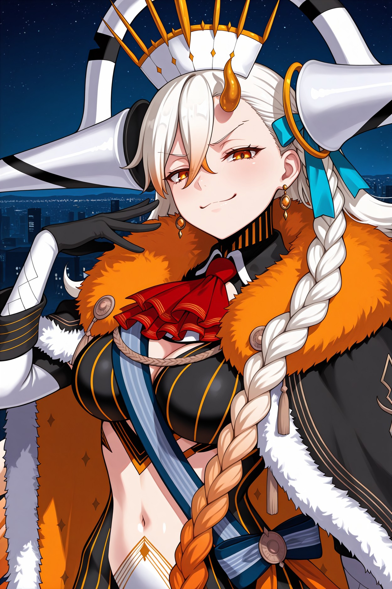
Illustrious
全般
olgamarie-illu-nvwls-v1
「olgamarie-illu-nvwls-v1」に特化した追加学習モデルです。Stable DiffusionでのAI画像生成にLoRAを導入し、特定要素の再現性を劇的に向上。効率的かつ高品質なビジュアルを求める全てのAI絵師必見のモデルです。
Size: 57,450,148 bytes

Illustrious
全般
palutena-trailer-illustriousxl-lora-nochekaiser
「palutena-trailer-illustriousxl-lora-nochekaiser」に特化した追加学習モデルです。Stable DiffusionでのAI画像生成にLoRAを導入し、特定要素の再現性を劇的に向上。効率的かつ高品質なビジュアルを求める全てのAI絵師必見のモデルです。
Size: 228,467,868 bytes
Illustrious
全般
panty_peek_ilxl_goofy
「panty_peek_ilxl_goofy」に特化した追加学習モデルです。Stable DiffusionでのAI画像生成にLoRAを導入し、特定要素の再現性を劇的に向上。効率的かつ高品質なビジュアルを求める全てのAI絵師必見のモデルです。
Size: 57,417,276 bytes
Illustrious
全般
Queens_Blade_-_airi_-_illustrious
「Queens_Blade_-_airi_-_illustrious」に特化した追加学習モデルです。Stable DiffusionでのAI画像生成にLoRAを導入し、特定要素の再現性を劇的に向上。効率的かつ高品質なビジュアルを求める全てのAI絵師必見のモデルです。
Size: 228,478,100 bytes
Illustrious
全般
Queens_Blade_-_alleyne_-_illustrious
「Queens_Blade_-_alleyne_-_illustrious」に特化した追加学習モデルです。Stable DiffusionでのAI画像生成にLoRAを導入し、特定要素の再現性を劇的に向上。効率的かつ高品質なビジュアルを求める全てのAI絵師必見のモデルです。
Size: 114,448,988 bytes

Illustrious
全般
reines-el-melloi-archisorte-casefiles-s1-illustriousxl-lora-nochekaiser
「reines-el-melloi-archisorte-casefiles-s1-illustriousxl-lora-nochekaiser」に特化した追加学習モデルです。Stable DiffusionでのAI画像生成にLoRAを導入し、特定要素の再現性を劇的に向上。効率的かつ高品質なビジュアルを求める全てのAI絵師必見のモデルです。
Size: 228,470,684 bytes
Illustrious
全般
Reisen_IllustriousV2
「Reisen_IllustriousV2」に特化した追加学習モデルです。Stable DiffusionでのAI画像生成にLoRAを導入し、特定要素の再現性を劇的に向上。効率的かつ高品質なビジュアルを求める全てのAI絵師必見のモデルです。
Size: 228,450,268 bytes
Illustrious
全般
sakimiyairuka-illu-nvwls-v1
「sakimiyairuka-illu-nvwls-v1」に特化した追加学習モデルです。Stable DiffusionでのAI画像生成にLoRAを導入し、特定要素の再現性を劇的に向上。効率的かつ高品質なビジュアルを求める全てのAI絵師必見のモデルです。
Size: 57,453,676 bytes

Illustrious
全般
sakuya-shirase-s2-illustriousxl-lora-nochekaiser
「sakuya-shirase-s2-illustriousxl-lora-nochekaiser」に特化した追加学習モデルです。Stable DiffusionでのAI画像生成にLoRAを導入し、特定要素の再現性を劇的に向上。効率的かつ高品質なビジュアルを求める全てのAI絵師必見のモデルです。
Size: 228,466,548 bytes

Illustrious
全般
satsuki-kuroda-ova-illustriousxl-lora-nochekaiser
「satsuki-kuroda-ova-illustriousxl-lora-nochekaiser」に特化した追加学習モデルです。Stable DiffusionでのAI画像生成にLoRAを導入し、特定要素の再現性を劇的に向上。効率的かつ高品質なビジュアルを求める全てのAI絵師必見のモデルです。
Size: 228,465,332 bytes
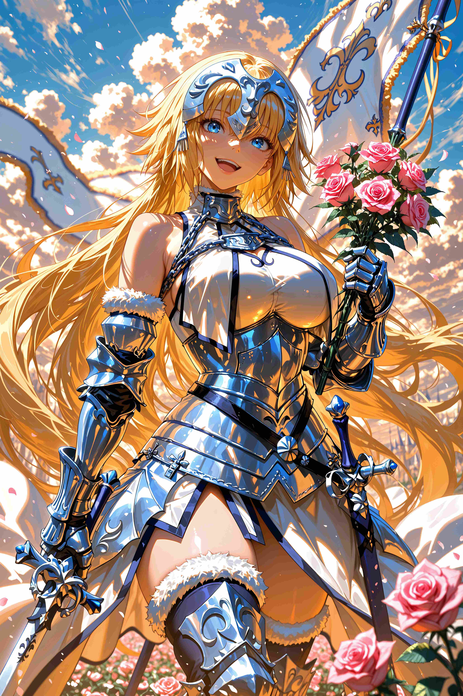
Illustrious
全般
shC398nE79EAC.mcat
「shC398nE79EAC.mcat」に特化した追加学習モデルです。Stable DiffusionでのAI画像生成にLoRAを導入し、特定要素の再現性を劇的に向上。効率的かつ高品質なビジュアルを求める全てのAI絵師必見のモデルです。
Size: 228,509,956 bytes
Illustrious
全般
Shishido_Akari_IL_2.0
「Shishido_Akari_IL_2.0」に特化した追加学習モデルです。Stable DiffusionでのAI画像生成にLoRAを導入し、特定要素の再現性を劇的に向上。効率的かつ高品質なビジュアルを求める全てのAI絵師必見のモデルです。
Size: 228,477,596 bytes
Illustrious
全般
skmi_s_il_1.1
「skmi_s_il_1.1」に特化した追加学習モデルです。Stable DiffusionでのAI画像生成にLoRAを導入し、特定要素の再現性を劇的に向上。効率的かつ高品質なビジュアルを求める全てのAI絵師必見のモデルです。
Size: 57,424,580 bytes

Illustrious
全般
SmugFace_IXL
「SmugFace_IXL」に特化した追加学習モデルです。Stable DiffusionでのAI画像生成にLoRAを導入し、特定要素の再現性を劇的に向上。効率的かつ高品質なビジュアルを求める全てのAI絵師必見のモデルです。
Size: 242,708,628 bytes
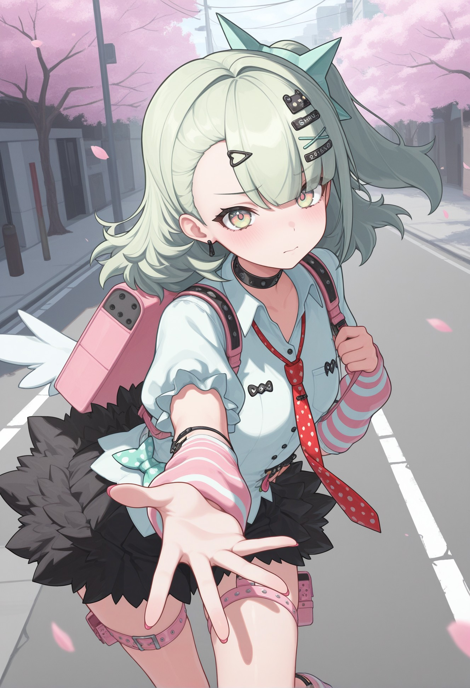
Illustrious
全般
sunna_zzz_illust_scarxzys
「sunna_zzz_illust_scarxzys」に特化した追加学習モデルです。Stable DiffusionでのAI画像生成にLoRAを導入し、特定要素の再現性を劇的に向上。効率的かつ高品質なビジュアルを求める全てのAI絵師必見のモデルです。
Size: 57,424,316 bytes
Illustrious
全般
takamiya_rion_7th-08
「takamiya_rion_7th-08」に特化した追加学習モデルです。Stable DiffusionでのAI画像生成にLoRAを導入し、特定要素の再現性を劇的に向上。効率的かつ高品質なビジュアルを求める全てのAI絵師必見のモデルです。
Size: 50,935,228 bytes

Illustrious
全般
tatenashi-sarashiki-s2-illustriousxl-lora-nochekaiser
「tatenashi-sarashiki-s2-illustriousxl-lora-nochekaiser」に特化した追加学習モデルです。Stable DiffusionでのAI画像生成にLoRAを導入し、特定要素の再現性を劇的に向上。効率的かつ高品質なビジュアルを求める全てのAI絵師必見のモデルです。
Size: 228,473,892 bytes
-Illus (1).preview.jpg)
Illustrious
全般
Tirpitz(azur)-Illus (1)
「Tirpitz(azur)-Illus (1)」に特化した追加学習モデルです。Stable DiffusionでのAI画像生成にLoRAを導入し、特定要素の再現性を劇的に向上。効率的かつ高品質なビジュアルを求める全てのAI絵師必見のモデルです。
Size: 28,917,708 bytes
Illustrious
全般
Tirpitz(azur)-Illus
「Tirpitz(azur)-Illus」に特化した追加学習モデルです。Stable DiffusionでのAI画像生成にLoRAを導入し、特定要素の再現性を劇的に向上。効率的かつ高品質なビジュアルを求める全てのAI絵師必見のモデルです。
Size: 28,917,708 bytes

Illustrious
全般
tobera-azuma-alpha-illustriousxl-lora-nochekaiser
「tobera-azuma-alpha-illustriousxl-lora-nochekaiser」に特化した追加学習モデルです。Stable DiffusionでのAI画像生成にLoRAを導入し、特定要素の再現性を劇的に向上。効率的かつ高品質なビジュアルを求める全てのAI絵師必見のモデルです。
Size: 228,461,180 bytes
Illustrious
全般
uran_style_civ_web_illustrious_epoch_8
「uran_style_civ_web_illustrious_epoch_8」に特化した追加学習モデルです。Stable DiffusionでのAI画像生成にLoRAを導入し、特定要素の再現性を劇的に向上。効率的かつ高品質なビジュアルを求める全てのAI絵師必見のモデルです。
Size: 228,466,276 bytes
Illustrious
全般
valkfreya-illu-nvwls-v1
「valkfreya-illu-nvwls-v1」に特化した追加学習モデルです。Stable DiffusionでのAI画像生成にLoRAを導入し、特定要素の再現性を劇的に向上。効率的かつ高品質なビジュアルを求める全てのAI絵師必見のモデルです。
Size: 57,423,100 bytes
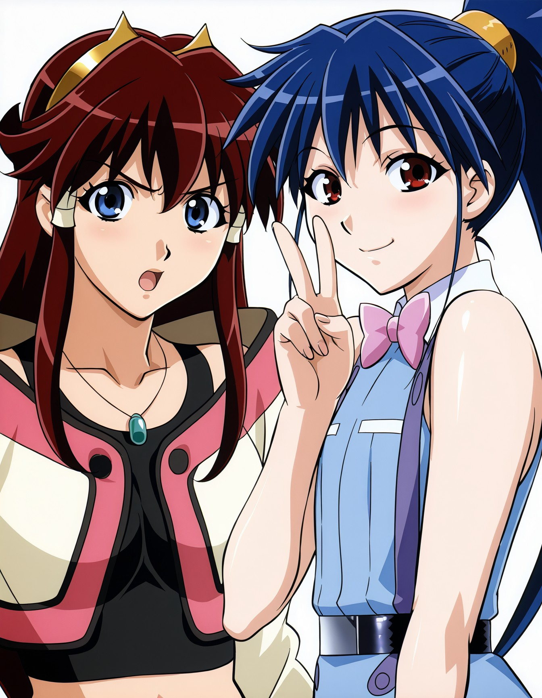
Illustrious
全般
vandread-v10-illustrious-000015
「vandread-v10-illustrious-000015」に特化した追加学習モデルです。Stable DiffusionでのAI画像生成にLoRAを導入し、特定要素の再現性を劇的に向上。効率的かつ高品質なビジュアルを求める全てのAI絵師必見のモデルです。
Size: 44,576,112 bytes
Illustrious
全般
Vepley(gf2)-Illus
「Vepley(gf2)-Illus」に特化した追加学習モデルです。Stable DiffusionでのAI画像生成にLoRAを導入し、特定要素の再現性を劇的に向上。効率的かつ高品質なビジュアルを求める全てのAI絵師必見のモデルです。
Size: 25,644,188 bytes
Illustrious
全般
victoirepisa_Illust_v1
「victoirepisa_Illust_v1」に特化した追加学習モデルです。Stable DiffusionでのAI画像生成にLoRAを導入し、特定要素の再現性を劇的に向上。効率的かつ高品質なビジュアルを求める全てのAI絵師必見のモデルです。
Size: 228,458,204 bytes
Illustrious
全般
Watatsuki-no-Toyohime_IllustriousV2
「Watatsuki-no-Toyohime_IllustriousV2」に特化した追加学習モデルです。Stable DiffusionでのAI画像生成にLoRAを導入し、特定要素の再現性を劇的に向上。効率的かつ高品質なビジュアルを求める全てのAI絵師必見のモデルです。
Size: 228,450,268 bytes
Illustrious
全般
yagami_hayate_ilxl_v1
「yagami_hayate_ilxl_v1」に特化した追加学習モデルです。Stable DiffusionでのAI画像生成にLoRAを導入し、特定要素の再現性を劇的に向上。効率的かつ高品質なビジュアルを求める全てのAI絵師必見のモデルです。
Size: 114,432,124 bytes
Illustrious
全般
yakumo_beni_ilxl_v1
「yakumo_beni_ilxl_v1」に特化した追加学習モデルです。Stable DiffusionでのAI画像生成にLoRAを導入し、特定要素の再現性を劇的に向上。効率的かつ高品質なビジュアルを求める全てのAI絵師必見のモデルです。
Size: 114,432,124 bytes
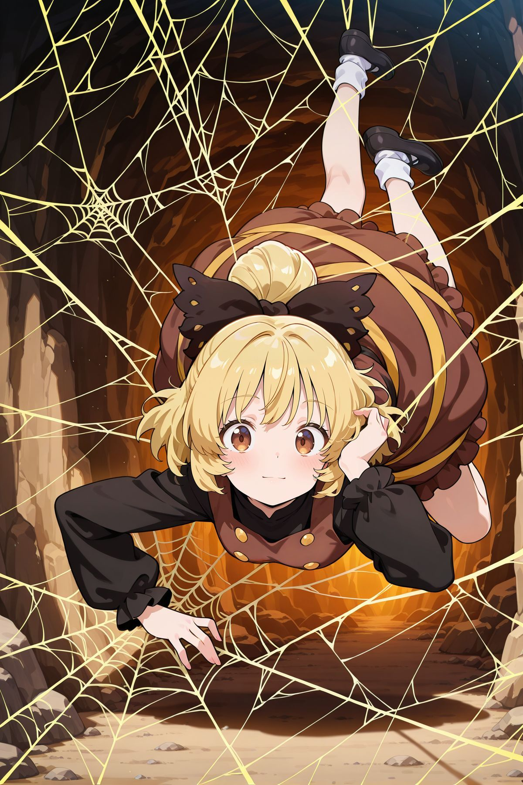
Illustrious
全般
Yamame-Kurodani_IllustriousV2
「Yamame-Kurodani_IllustriousV2」に特化した追加学習モデルです。Stable DiffusionでのAI画像生成にLoRAを導入し、特定要素の再現性を劇的に向上。効率的かつ高品質なビジュアルを求める全てのAI絵師必見のモデルです。
Size: 228,450,268 bytes

Illustrious
全般
ylgr feh 2outfits_illustriousXL
「ylgr feh 2outfits_illustriousXL」に特化した追加学習モデルです。Stable DiffusionでのAI画像生成にLoRAを導入し、特定要素の再現性を劇的に向上。効率的かつ高品質なビジュアルを求める全てのAI絵師必見のモデルです。
Size: 114,441,708 bytes
Illustrious
全般
yozora_mel_ilxl_v1
「yozora_mel_ilxl_v1」に特化した追加学習モデルです。Stable DiffusionでのAI画像生成にLoRAを導入し、特定要素の再現性を劇的に向上。効率的かつ高品質なビジュアルを求める全てのAI絵師必見のモデルです。
Size: 114,432,124 bytes
Illustrious
全般
z47_IL_v2.0
「z47_IL_v2.0」に特化した追加学習モデルです。Stable DiffusionでのAI画像生成にLoRAを導入し、特定要素の再現性を劇的に向上。効率的かつ高品質なビジュアルを求める全てのAI絵師必見のモデルです。
Size: 114,445,908 bytes
Illustrious
全般
zibai_genshin_impact_ilxl_goofy
「zibai_genshin_impact_ilxl_goofy」に特化した追加学習モデルです。Stable DiffusionでのAI画像生成にLoRAを導入し、特定要素の再現性を劇的に向上。効率的かつ高品質なビジュアルを求める全てのAI絵師必見のモデルです。
Size: 57,417,284 bytes
Illustrious
全般
_aemeath_wuwa-elesico-ilxl
「_aemeath_wuwa-elesico-ilxl」に特化した追加学習モデルです。Stable DiffusionでのAI画像生成にLoRAを導入し、特定要素の再現性を劇的に向上。効率的かつ高品質なビジュアルを求める全てのAI絵師必見のモデルです。
Size: 28,955,932 bytes
Illustrious
全般
_escha_malier-elesico-ilxl
「_escha_malier-elesico-ilxl」に特化した追加学習モデルです。Stable DiffusionでのAI画像生成にLoRAを導入し、特定要素の再現性を劇的に向上。効率的かつ高品質なビジュアルを求める全てのAI絵師必見のモデルです。
Size: 28,958,644 bytes
Illustrious
全般
_shizuka_rin-elesico-ilxl
「_shizuka_rin-elesico-ilxl」に特化した追加学習モデルです。Stable DiffusionでのAI画像生成にLoRAを導入し、特定要素の再現性を劇的に向上。効率的かつ高品質なビジュアルを求める全てのAI絵師必見のモデルです。
Size: 28,958,060 bytes
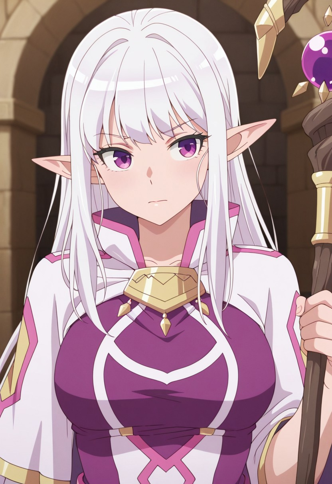
Illustrious
全般
Mariabelle-61
「Mariabelle-61」に特化した追加学習モデルです。Stable DiffusionでのAI画像生成にLoRAを導入し、特定要素の再現性を劇的に向上。効率的かつ高品質なビジュアルを求める全てのAI絵師必見のモデルです。
Size: 114,440,876 bytes
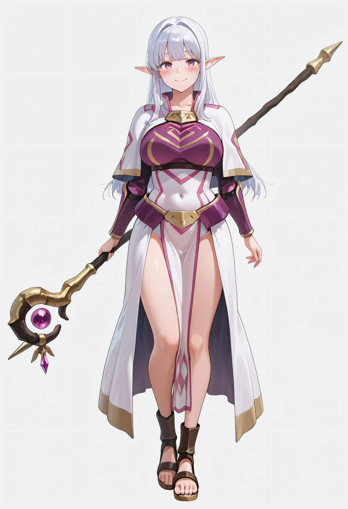
Illustrious
全般
Mariabelle_Welcome_to_Japan_Ms_Elf_ilxl_goofy
「Mariabelle_Welcome_to_Japan_Ms_Elf_ilxl_goofy」に特化した追加学習モデルです。Stable DiffusionでのAI画像生成にLoRAを導入し、特定要素の再現性を劇的に向上。効率的かつ高品質なビジュアルを求める全てのAI絵師必見のモデルです。
Size: 57,417,300 bytes
Illustrious
全般
Monica_Adenauer
「Monica_Adenauer」に特化した追加学習モデルです。Stable DiffusionでのAI画像生成にLoRAを導入し、特定要素の再現性を劇的に向上。効率的かつ高品質なビジュアルを求める全てのAI絵師必見のモデルです。
Size: 228,457,060 bytes
Illustrious
全般
PurpleKeeper_IL-06
「PurpleKeeper_IL-06」に特化した追加学習モデルです。Stable DiffusionでのAI画像生成にLoRAを導入し、特定要素の再現性を劇的に向上。効率的かつ高品質なビジュアルを求める全てのAI絵師必見のモデルです。
Size: 50,930,612 bytes
Illustrious
全般
RedTeamUniform_IL-05
「RedTeamUniform_IL-05」に特化した追加学習モデルです。Stable DiffusionでのAI画像生成にLoRAを導入し、特定要素の再現性を劇的に向上。効率的かつ高品質なビジュアルを求める全てのAI絵師必見のモデルです。
Size: 50,931,980 bytes

Illustrious
全般
riMixPONYIllustrious_riMix
「riMixPONYIllustrious_riMix」に特化した追加学習モデルです。Stable DiffusionでのAI画像生成にLoRAを導入し、特定要素の再現性を劇的に向上。効率的かつ高品質なビジュアルを求める全てのAI絵師必見のモデルです。
Size: 6,938,047,380 bytes
Illustrious
全般
Wridra-63
「Wridra-63」に特化した追加学習モデルです。Stable DiffusionでのAI画像生成にLoRAを導入し、特定要素の再現性を劇的に向上。効率的かつ高品質なビジュアルを求める全てのAI絵師必見のモデルです。
Size: 114,437,100 bytes